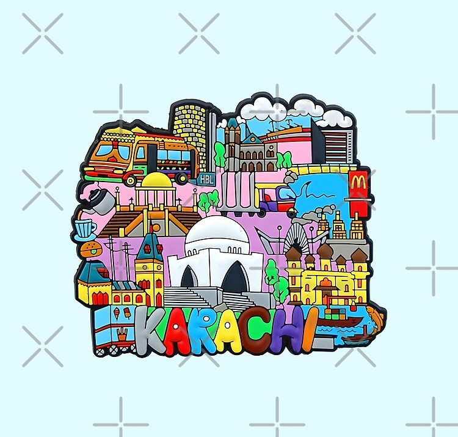

Karachi was a small fishing village when a group of traders moved there in the early 18th century from the decaying port of Kharak Bandar nearby. Besides the natural protection against monsoon storms, Manora Head furnished an excellent site for the defense of the harbour, and the Talpura amīrs who gained Karachi from the khān of Kalāt in 1795 erected a permanent fort on it. The settlement expanded rapidly and was already of significance when it was captured in 1839 by the British, who annexed it in 1842, together with the province of Sindh. It then became an army headquarters for the British and also began to develop from a fishing village into the principal port for the Indus River region.
In 1843 a river-steamer service was introduced between Karachi and Multān, about 500 miles up the Indus. Port facilities were improved from 1854 onward. In 1861 a railway was built from Karachi to Kotri, 90 miles upstream on the right bank of the Indus, opposite Hyderabad. In 1864 direct telegraph communications were established with London and with the interior. With the opening of the Suez Canal in 1869, the importance of Karachi grew, and it became a full-fledged seaport. By 1873 it possessed an efficient and well-managed harbour.
Karachi was connected directly with the hinterland when the railway line was extended from Kotri in 1878 to join the Delhi-Punjab railway system at Multān. In 1886 the Karachi Port Trust was established as the port authority, and between 1888 and 1910 the East Wharf—186,000 feet in length—was constructed. When the Punjab emerged as the granary of India in the 1890s, Karachi became the region’s principal outlet. By 1914 it had become the largest grain exporting port of the British Empire.
After World War I, manufacturing and service industries were installed. By 1924 an aerodrome had been built, and Karachi became the main airport of entry to India. The city became the provincial capital of Sindh in 1936.
With the creation of Pakistan on August 14, 1947, celebrated annually as Independence Day from British rule, Karachi became not only the capital and premier port of the new country but also a centre for industry, business, and administration. Although Rawalpindi became the interim capital in 1959, before the capital permanently moved to Islamabad in 1969, Karachi maintained its preeminence as Pakistan’s business and industrial hub. In a development typical of many postcolonial megacities, this premier economic status subsequently contributed to an enormous increase in Karachi’s population, as a huge influx of job-seeking immigrants from rural areas nearly doubled the city’s size in the final two decades of the 20th century. With the city’s infrastructure already overburdened to the breaking point, fully one-third of these new arrivals were forced to take up residence in urban shantytowns known as katchi abadis, which ordinarily lacked power, running water, or sanitation. The delivery of basic city services remained an ongoing problem for Karachi into the 21st century.
The final quarter of the 20th century also brought a huge wave of urban violence and crime to Karachi, in the form of ethnic violence between native Sindhis and more recent immigrants from India, the muhājirs, and in an increased rate of both simple crime and organized brigandage. The severity of lawlessness in Karachi prompted the government to initiate a military crackdown on crime in the city in 1992, but this campaign did not begin to see significant results until the end of that decade.
Violence and crime continued to plague the city into the beginning of the 21st century. Conflict between ethnic factions was further exacerbated by a rapid influx of Pashtuns from the north. In 2013 the national government launched a new military crackdown. That same year the provincial government of Sindh enacted reforms that decentralized the city’s municipal services and gave the province additional oversight. Karachi saw a dramatic decline in crime by the end of the decade, but confusion over who was responsible for financing and providing certain basic services left infrastructure and sanitation deteriorating.
The Arts Council of Pakistan is the primary cultural institution in the city; it organizes various cultural functions, including art exhibitions, and offers training in music. The Ghanshyam Art Centre and the Bulbul Academy promote Pakistani dancing and other cultural activities.
Karachi does not have well-established theatre, but amateur dramas and variety shows are frequently staged in Katrak Hall. Motion pictures are more popular, and at its peak Karachi had more than 100 cinema theatres, although it now has fewer than 10 because of a declining film industry and the growing ability to watch motion pictures at home.
Karachi has a small museum containing relics of the early Indus valley civilization and examples of the Greco-Buddhist art of Gandhara (a region of ancient India in what is now northwestern Pakistan); it also has some ethnological collections representing life in different regions of Pakistan.
The library of the University of Karachi is the city’s largest, but there are other libraries containing books of a popular nature. Material of a more scholarly nature is to be found in the British Council Library, the American Center Library, and the Liaquat Memorial Library. The departmental libraries of the State Bank of Pakistan, the Pakistan Institute of Development Economics, and the National Archives contain collections of books on economics and on national matters.
There is a general shortage of open spaces and parks in Karachi. Gandhi Gardens and Fatima Jinnah (Burns) Gardens are popular parks. There are a number of fine swimming and fishing beaches, such as Paradise Point, Hawkes Bay, Sandspit, Manora, and Clifton. The Karachi Zoo is located in the Gandhi Gardens and contains a varied collection of mammals, birds, and reptiles.
Sports and games facilities are mostly provided by such associations as the Karachi Gymkhana, the Parsi Gymkhana, the Agha Khan Gymkhana, and the Young Men’s Christian Association (YMCA). Various organizations and educational institutions have their own playgrounds. The largest sports area is the National Stadium, which contains playgrounds for cricket, hockey, football (soccer), and tennis. There are also boating, yachting, and flying clubs.